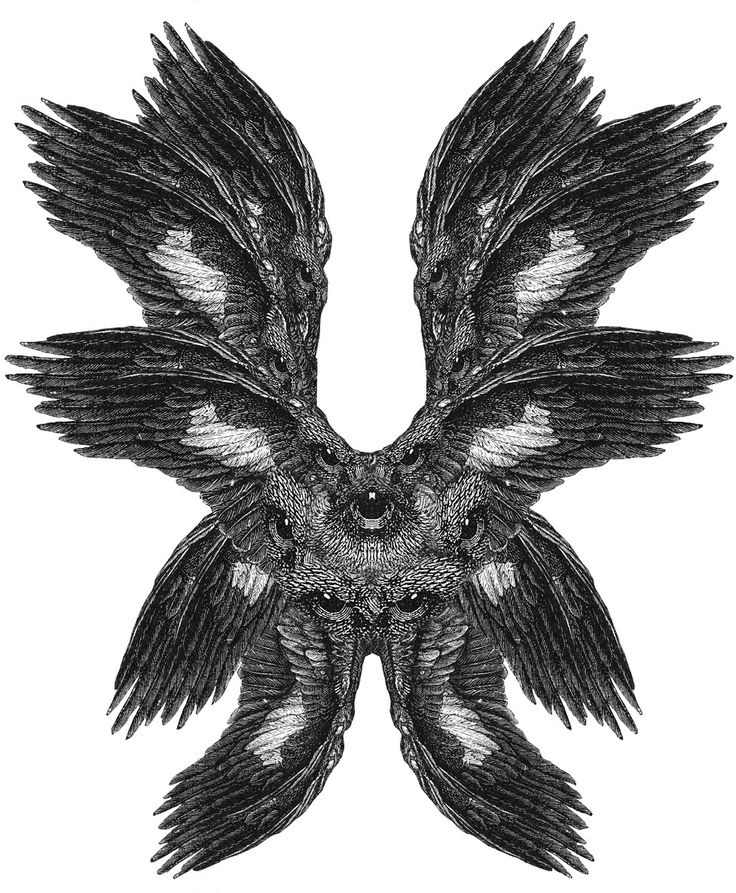

angels
angels 
angels are heavenly beings sent by God to guide and protect us. they come in many shapes and sizes. some are cute and others are creepy. they are all however beautiful.

seraphim (שָׂרָף) are one of the most beautifl angels of them all. they have 6 wings, and many eyes, and are seen in scripture greeting people with the phrase "fear not!"
angels are extra-dimensional beings, and act as messangers between heaven and earth.
˚ ꒰ა ♱ ໒꒱ ˚
what is the angelheart?
the angelheart symbolizes a heart made new in Christ. it is characterized by a feeling of being safe within oneself.